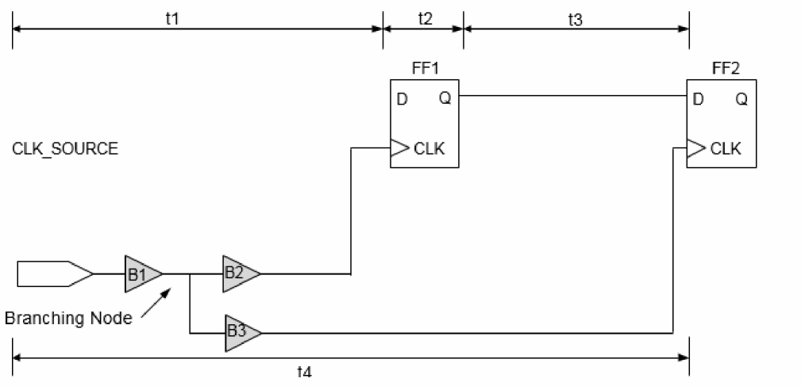

Clock Path Pessimism Removal
Clock Path Pessimism Removal (CPPR) is the process of identifying and removing pessimism introduced in slack reports for clock paths when launch and capture clock paths have a segment in common.
You can introduce early or late delay variations by using the set_db timing_analysis_type ocv attribute or by using the set_timing_derate command for early and late clock paths. In CPPR calculations, the difference between late and early delays (for the common clock segment between launch and capture clock path) is calculated first and then this number is adjusted in the slack calculations to remove the pessimism, which existed because of considering common clock path to be both late and early at the same time. To remove this pessimism in propagated clock mode, you can use the following command:
set_db timing_analysis_cppr true
Consider the following figure for setup check between flops FF1 and FF2.

The setup check equation for the example in the figure above with pessimism (without CPPR) is as follows:
t1max + t2max + t3max <= t4min + tcp - tsu
where tcp is the clock period and tsu is the setup requirement at D pin of flip-flop FF2.
The above setup check equation incorrectly implies that the common clock network, B1, can simultaneously use maximum delay for the launch clock late path (clock source to FF1/CLK) and minimum delay for the capture clock early path (clock source to FF2/CLK). Using the CPPR to remove this pessimism, the setup check equation is as follows:
t1max + t2max + t3max <= t4min + tcp - tsu + tcppr
where tcppr is the difference in the maximum and minimum delay from the clock source to the branching node.
Similarly, hold check equation using CPPR is as follows:
t1min + t2min + t3min + tcppr <= t4max + tH
where tH is the hold requirement at D pin of flop FF2.
Clock Re-convergence and CPPR
If a design contains re-convergent logic on the clock path, then the timing analysis software might assume certain pessimism while calculating slack. The following figure shows a circuit in which timing analysis is performed in single analysis mode.
Figure -67 Illustration of Clock Re-convergence

In this case, if the set_case_analysis command has not been set at point S of the multiplexer, the timing analysis software will assume different delay values for early and late paths. For example, if common early clock path from the clock source to the common clock point has a delay of 0.5ns, and the same common late clock path has delay of 1ns, then a pessimism equal to 0.5ns is introduced in the design. The above pessimism is not specific to single analysis mode only; it also applies to best-case/worst-case and on-chip variation methodologies. You can use CPPR to remove pessimism introduced due to re-convergence.
Supported CPPR Attributes
The Tempus software uses multiple attributes to control CPPR behavior. These can be changed based on the user requirements. When these attributes are changed, there can be changes in common clock path pessimism removal in terms of accuracy, common point selection, SI behavior, and so on.
Some of these attributes include:
-
timing_cppr_remove_clock_to_data_pessimism -
timing_cppr_self_loop_mode -
timing_cppr_skip_clock_reconvergence -
timing_cppr_threshold_ps -
timing_cppr_transition_sense -
timing_enable_pessimistic_cppr_for_reconvergent_clock_paths -
timing_enable_si_cppr -
timing_cppr_opposite_edge_mean_scale_factor -
timing_cppr_opposite_edge_sigma_scale_factor
For more information, refer to
Tempus uses a default threshold of 20ps during pessimism removal. This means that 20ps of uncertainty remains in the analysis. To set the threshold value you can use the timing_cppr_threshold_ps attribute. When you set this attribute to a specified value, all the paths may be reported without having pessimism removed by the given value of the attribute. During SI analysis, the CPPR behavior for setup and hold checks can be controlled by setting the timing_enable_si_cppr attribute.
Timing Analysis Results Before and After CPPR
The following example shows a full clock path timing report generated before CPPR analysis. The timing slack is 7.388 without any CPPR adjustments:
---------------------------------------------------------------------
Path 1: MET (0.285 ns) Setup Check with Pin CRE_IN/DATA_BUS_MACH_INST/data_out_reg[9]/CP->D
Group: m_clk
Startpoint: (R) CRE_IN/EX_IN/arp_reg/CP
Clock: (R) m_clk
Endpoint: (F) CRE_IN/DATA_BUS_MACH_INST/data_out_reg[9]/D
Clock: (R) m_clk
Capture Launch
Clock Edge:+ 7.000 0.000
Src Latency:+ 0.000 0.000
Net Latency:+ 0.514 (P) 0.623 (P)
Arrival:= 7.515 0.623
Setup:- 0.074
Required Time:= 7.441
Launch Clock:= 0.623
Data Path:+ 6.533
Slack:= 0.285
Timing Path:
#-------------------------------------------------------------------------------
# Timing Point Flags Arc Edge Cell Fanout Trans Delay Arrival
(ns) (ns) (ns)
#-------------------------------------------------------------------------------
CRE_IN/msvBuf21m_clk/Z - I->Z R LVLHLD8 1 0.040 0.119 0.196
CRE_IN/msvNet21m_clk_L1_I0/ZN - I->ZN F INVD16 2 0.088 0.053 0.249
CRE_IN/msvNet21m_clk_L2_I1/Z - I->Z F BUFFD12 1 0.044 0.082 0.331
CRE_IN/msvNet21m_clk_L3_I0/Z - I->Z F BUFFD12 1 0.029 0.088 0.419
#------------------------------------------------------------------------------
Other End Path:
#-------------------------------------------------------------------------------
# Timing Point Flags Arc Edge Cell Fanout Trans Delay Arrival
(ns) (ns) (ns)
#-------------------------------------------------------------------------------
m_clk__L1_I0/Z - I->Z R BUFFD12 2 0.030 0.065 7.065
CRE_IN/msvBuf21m_clk/Z - I->Z R LVLHLD8 1 0.040 0.099 7.163
CRE_IN/msvNet21m_clk_L1_I0/ZN - I->ZN F INVD16 2 0.088 0.044 7.208
CRE_IN/msvNet21m_clk_L2_I1/Z - I->Z F BUFFD12 1 0.044 0.068 7.276
#--------------------------------------------------------------------------------
When CPPR adjustment is made, the timing slack improvement is seen as pessimism and is displayed as “CPPR Adjustment” in the timing report.
In the example given below, “c2” is a common clock point after which the clock diverges:
#-----------------------------------------------------------------------
Path 1: MET (0.328 ns) Setup Check with Pin CRE_IN/DATA_BUS_MACH_INST/data_out_reg[9]/CP->D
Group: m_clk
Startpoint: (R) CRE_IN/EX_IN/ar0_reg[0]/CP
Clock: (R) m_clk
Endpoint: (F) CRE_IN/DATA_BUS_MACH_INST/data_out_reg[9]/D
Clock: (R) m_clk
Capture Launch
Clock Edge:+ 7.000 0.000
Src Latency:+ 0.000 0.000
Net Latency:+ 0.514 (P) 0.674 (P)
Arrival:= 7.515 0.674
Setup:- 0.074
Cppr Adjust:+ 0.042
Required Time:= 7.482
Launch Clock:= 0.674
Data Path:+ 6.480
Slack:= 0.328
Timing Path:
#-------------------------------------------------------------------------------
# Timing Point Flags Arc Edge Cell Fanout Trans Delay Arrival
(ns) (ns) (ns)
#-------------------------------------------------------------------------------
m_clk__L1_I0/Z - I->Z R BUFFD12 2 0.030 0.078 0.078
CRE_IN/msvBuf21m_clk/Z - I->Z R LVLHLD8 1 0.040 0.119 0.196
CRE_IN/msvNet21m_clk_L1_I0/ZN - I->ZN F INVD16 2 0.088 0.058 0.254
CRE_IN/msvNet21m_clk_L2_I0/ZN - I->ZN R INVD16 9 0.045 0.069 0.323
CRE_IN/EX_IN/RC_CGIC_INST/Q - CP->Q R CKLNQD1 1 0.073 0.155 0.478
CRE_IN/EX_IN/rc_gclk_L1_I0/Z - I->Z R BUFFD6 1 0.079 0.113 0.591
#-------------------------------------------------------------------------------
Other End Path:
#------------------------------------------------------------------------------- # Timing Point Flags Arc Edge Cell Fanout Trans Delay Arrival
(ns) (ns) (ns)
#-------------------------------------------------------------------------------
m_clk__L1_I0/Z - I->Z R BUFFD12 2 0.030 0.065 7.065
CRE_IN/msvBuf21m_clk/Z - I->Z R LVLHLD8 1 0.040 0.099 7.163
CRE_IN/msvNet21m_clk_L1_I0/ZN - I->ZN F INVD16 2 0.088 0.044 7.208
CRE_IN/msvNet21m_clk_L2_I1/Z - I->Z F BUFFD12 1 0.044 0.068 7.276
CRE_IN/msvNet21m_clk_L3_I0/Z - I->Z F BUFFD12 1 0.029 0.072 7.348
CRE_IN/msvNet21m_clk_L4_I0/ZN - I->ZN R INVD16 1 0.040 0.029 7.378
#--------------------------------------------------------------------------------
Return to top